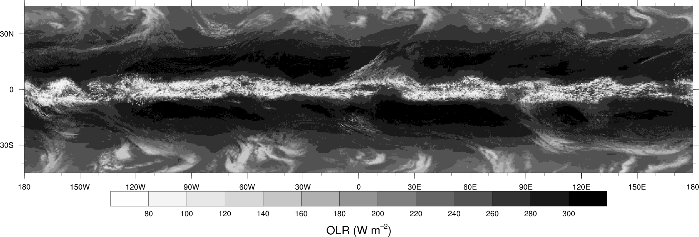

Rosimar Rios-Berrios
I am an atmospheric scientist with expertise in tropical weather and numerical weather prediction.
I received my PhD from the University at Albany, where I worked with Ryan Torn on tropical cyclone intensification under moderate vertical wind shear. I currently hold an Advanced Study Program Postdoctoral Fellowship at the National Center for Atmospheric Research, where I will later transition into a ladder-track scientist.
In this website you will find information about my research, as well as a list of scholarships, internships, and other opportunities for atmospheric science students. Feel free to contact me with any questions.
Research
My research seeks to identify physical processes that govern the evolution of high-impact weather, especially tropical cyclones. My primary tools are numerical weather prediction models and observations collected by hurricane hunter aircraft. Some noteworthy research projects are summarized below.
Intraseasonal variability and tropical cyclogenesis
This project aims at investigating the relationship between tropical rainfall variability and tropical cyclone activity at intraseasonal timescales. Previous studies suggest that convectively coupled equatorial waves can affect the chances of tropical formation; however, the precise physical mechanisms causing such influence remain unknown. I am studying those mechanisms with aquaplanet simulations with the Model for Prediction Across Scales.
 Snapshot of outgoing longwave radiation from an aquaplanet simulation. An ITCZ and multiple midlatitude cyclones are evident.Tropical cyclone intensification under moderate shear
My PhD dissertation centered on the issue of tropical cyclone intensification under moderate vertical wind shear. Through case studies and a climatological analysis, this research demonstrated that thermodynamic conditions influence the chances of intensification under shear conditions typically deemed as unfavorable or detrimental. I expanded that research using idealized numerical simulations with high-frequency output to diagnose dynamic and thermodynamic processes preceding intensification.
Some publications about this work:
- Rios-Berrios, R., and R. D. Torn, 2017: Climatological analysis of tropical cyclone intensity changes under moderate vertical wind shear. Mon. Wea. Rev., 145, 1717-1738. [Link]
- Rios-Berrios R., R. D. Torn, and C. A. Davis, 2016: An ensemble approach to investigate tropical cyclone intensification in sheared environments. Part II: Ophelia (2011). J. Atmos. Sci., , 73, 1555-1575. [Link]
- Rios-Berrios R., R. D. Torn, and C. A. Davis, 2016: An ensemble approach to investigate tropical cyclone intensification in sheared environments. Part I: Katia (2011). J. Atmos. Sci., 73, 71-93. [Link]
Extreme rainfall from tropical storms
Water, not wind, is the leading cause of fatalities associated with tropical cyclones. Tropical Storm Erika of 2015 reminded us of the power of rainfall even the winds of a tropical cyclone are weak. More than 20 inches (or 500 mm) of rain fell over the Commonwealth of Dominica on August 27, 2015 as Tropical Storm Erika passed over the northern Lesser Antilles. In this study, Allison Nugent (from U. of Hawaii) and I investigate the combination of factors that led to such remarkable rainfall event. Vertical wind shear, a mesovortex, and terrain are amongst the factors that together favored continuous rain over the island.
Part of this work was recently published in the Monthly Weather Review journal:
- Nugent, A., and R. Rios-Berrios, 2018: Factors leading to extreme precipitation on Dominica from Tropical Storm Erika (2015). Mon. Wea. Rev., 146, 525-541. [Link]
Sudden Stratospheric Warmings
Although not my area of specialty, I am also intersted in the link between tropical rainfall and sudden stratospheric warmings (SSWs). This interest was sparked by a case study of the January 2013 SSW, which was preceded by several events of anomalous poleward heat flux from the tropics to the high latitudes. Several questions remain, such as: what was the influence of tropical convection over the Indian Ocean in triggering persistent poleward heat flux during the week before the SSW?

Fig.1a from Attard et al. (2016) showing the evolution of 10-hPa zonal mean zonal wind at 65N. The SSW begins where the color changes from blue to red.
Check out our analysis of factors preceding the SSW 2013:
- Attard, H. E., R. Rios-Berrios, C. T. Guastini and A. L. Lang: Tropospheric and stratospheric precursors to the January 2013 sudden stratospheric warming. Mon. Wea Rev., 144,1321-1339. [Link]
Vita
Education
Ph.D., Atmospheric Science
Advisor: Dr. Ryan D. Torn
2017
B.Sc., Theoretical Physics
Curricular sequence, Atmospheric Science and Meteorology
2012
Fellowships
ASP Postdoctoral Fellowship
ASP Graduate Student Visitor Fellowship
NSF Graduate Research Fellowship
AMS Graduate Research/Industry Fellowship
August 2017 - present
October 2016 - March 2017
September 2013 - August 2016
August 2012 - July 2013
Select Awards & Recognitions
Inaugural BRIDGE Scholar, University of Massachusetts Armherst
UAlbany’s College of Arts and Sciences Distinguished Dissertation Award
UAlbany’s Narayan R. Gokhale Distinguished Research Scholarship Award
First place - Outstanding Oral Presentation for the 28th Conference on Weather Analysis and Forecasting, 97th AMS Annual Meeting
Alternate - NOAA Global and Climate Change Postdoctoral Fellowship
UAlbany's Initiatives for Women Award
AMS Recognition for Co-Chairmanship of the AMS Annual Meeting
UPRM's Stefani Rafucci Award for the Highest GPA
UPRM's Arts and Science Faculty Award for the Highest GPA
UPRM's Enrico Fermi Award for the Highest GPA
SOARS Internship and Scholarship
AMS Undergraduate Named Scholarship (Werner A. Baum Endowed Scholarship)
NWA David Sankey Minority Scholarship in Meteorology
NOAA EPP Undergraduate Scholarship Program
2018
2018
2017
2017
2017
2014
2013
2012
2012
2012
2011-2014
2011-2012
2010-2011
2009-2011
Select Service
Associate Editor - Monthly Weather Review
Reviewer - Journal of the Atmospheric Sciences, Quarterly Journal of the Royal Meteorological Society, Journal of Advances in Modeling Earth Systems, Journal of Geophysical Research - Atmosphere, Weather and Forecasting, Journal of the Japan Meteorological Society, & Meteorology and Atmospheric Physics.
Member - AMS Committee on Tropical Meteorology and Tropical Cyclones
Co-Chair - 13th and 14th AMS Annual Student Conference
2018
2015-2017
2013-2015
Full CV
Publications
Rios-Berrios, R., C. A. Davis, and R. D. Torn, 2018: A Hypothesis for the Intensification of Tropical Cyclones under Moderate Vertical Wind Shear. J. Atmos. Sci., accepted. [Link]
Nugent, A., and R. Rios-Berrios, 2018: Factors leading to extreme precipitation on Dominica from Tropical Storm Erika (2015). Mon. Wea. Rev., 146, 525-541. [Link]
Rios-Berrios, R., and R. D. Torn, 2017: Climatological analysis of tropical cyclone intensity changes under moderate vertical wind shear. Mon. Wea. Rev., 145, 1717-1738. [Link]
Tang, B., R. Rios-Berrios, J. Alland, J. Berman, and K. Corbosiero, 2016: Sensitivity of axisymmetric tropical cyclone spin-up time to dry air aloft. J. Atmos. Sci., 73(11), 4269-4287. [Link]
Presentations
Public speaking is one of my favorite aspects of science, and a skill that I have cultivated since an early age. Nowadays I enjoy presenting my work through hour-long seminars or short talks and poster presentations. Below you will find a list of those presentations, including links to recordings or slides/posters. Please do not hesitate to contact me if you would like to provide feedback or ask any questions.
Picture credit: Molly B. Smith
Invited Seminars
Department of Geosciences, University of Massachusetts Amherst
Department of Atmospheric and Oceanic Sciences, University of Wisconsin
Department of Atmospheric Science, Colorado State University
2018
2017
2017
Conferences, Workshops, and Symposia
97th AMS Annual Meeting, Seattle, WA
2016 AGU Fall Meeting, San Francisco, CA
Significant Opportunities in Atmospheric Research and Science (SOARS) 20th Anniversary Symposium, Boulder, CO
{kind=link}
32nd AMS Conference on Hurricanes and Tropical Meteorology, San Juan, Puerto Rico
See full list of presentations here.
Opportunities
I am indebted to a number of programs that trained me one way or another in research, communication, and leadership. To help students who are looking to advance those skills, I have compiled a list of scholarships, fellowships, internships, and other programs aimed at students in the atmospheric and related sciences. This list is far from complete, but you can access it here.
Are you a student interested in visiting NCAR? Check out these fully-funded opportunities:
-
SOARS: an undergraduate-to-graduate internship program and community for students from underrepresented communities in the atmospheric sciences.
-
NCAR undergraduate leadership workshop: a week-long workshop about careers and leadership in the atmospheric sciences.
-
ASP Graduate Visitor Program: a visitor program for graduate students looking to spend 3 months or more working on their graduate research in collaboration with NCAR scientists
-
ASP Summer Colloquium: a two-week-long program designed to expose graduate students (and some post docs) to special topics in atmospheric sciences. The topic changes every year.
For those of you finishing your PhD soon:
-
ASP Postdoctoral Fellowship: a postdoctoral opportunity for conducting independent research for up to 2 years at NCAR.
-
Other postdoctoral and job opportunities will be posted here.
Students or post docs with funding to cover the costs of travel and housing are always welcome to visit us. We also have limited funded opportunities for scientists or faculty interested in visiting NCAR to initiate or continue collaborative research.
Contact me if you have any questions or if you wish to discuss those opportunities in more detail.